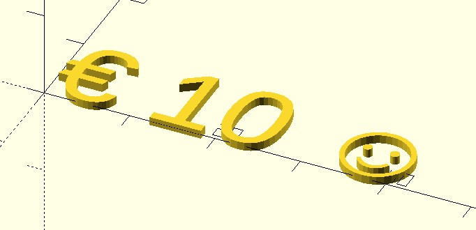
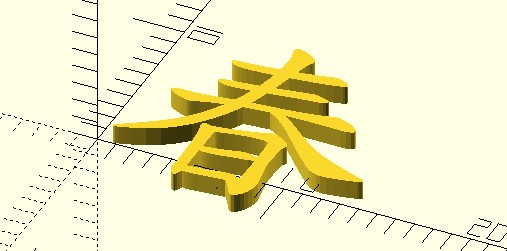
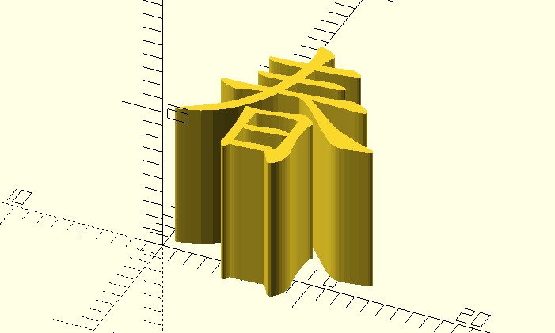
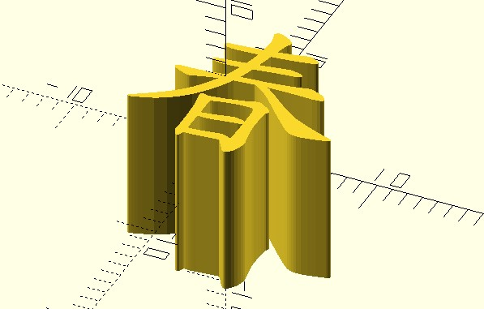
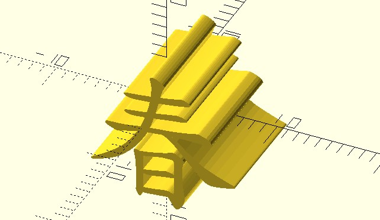

OpenSCAD CheatSheet
February 21, 2022想學習 OpenSCAD，〈OpenSCAD User Manual〉算是個蠻完整的說明，官網的〈Tutorial〉也很努力地收集了不少教學，不過老實說，大部份的時間裏，我都是查詢〈OpenSCAD CheatSheet〉，知道想使用的模組、轉換等如何使用，然後就動手做了…XD
在〈Hello, OpenSCAD〉看過基本的 OpenSCAD 程式樣貌，像是變數、for 語法、cube、text 模組、translate、rotate 轉換等，這邊就以 OpenSCAD CheatSheet 中的說明來進行。
不可變動的變數
首先你看到的是變數，其說明是列在〈OpenSCAD CheatSheet〉的 Syntax 區域：
my_text = "Hello, OpenSCAD!";
step_angle = 30;
radius = 30;
height = 5;
乍看沒什麼，就像是個動態定型語言，不需要宣告變數型態，不過，在〈Variable〉 中有這麼一句話：
OpenSCAD is a Functional programming language, as such variables are bound to expressions and keep a single value during their entire lifetime due to the requirements of referential transparency.
不過，說是 Functional programming 語言，其實還是有些不同，OpenSCAD 中對同一變數多次設值，並不會產生錯誤，只是同一範圍中，只會有一個值，而同一範圍中，無論你在哪些地方取值，取得的一定是最後一次設定的值。例如：
x = 1;
echo(x); // 顯示 2
x = 2;
echo(x); // 顯示 2
你可以在 OpenSCAD 的環境右下角控制台看到兩次的 “ECHO: 2”。至於這個行為在〈Variables are set at compile-time, not run-time〉有解釋為什麼，總之，別管這個行為，就照著 Functional programming 的基本概念，變數只能指定值一次，之後當變數值不可變動（Immutable）就是了。
或者應該說，OpenSCAD 的變數，概念上可以看成是數學上的變數，指定 x = 1，那麼 x 就是 1，1 就是 x，不會有 x = x + 1 這種行為，畢竟數學上就不成立。
for 迴圈
你看到的 for 迴圈，是列在 〈OpenSCAD CheatSheet〉 的 Other 區域，在〈For Loop〉的說明中有些範例，看了就明白了。
在〈Hello, OpenSCAD〉看到的是最基本的 for(variable = [start : end]) 形式，[start : end] 會產生 start 到 end 的範圍，在 for 的括號中指定給 variable，表示將範圍內的數字指定給 variable，預設遞增值 1，若想指定遞增值，可以使用 [start:step:end] 形式，step 用來指定遞增值，因此…
for (a =[3:5]) {
echo(a);
}
會在控制台看到 3、4、5 的顯示；for 的括號中，也可以指定 list 或字串，例如：
for (a =[1, 2, 3]) {
echo(a); // 逐一顯示 1 2 3
}
for (c = "abc") {
echo(c); // 逐一顯示 a b c
}
不過，別以為下面的程式會顯示 1 到 6：
sum = 0;
for (a =[0:5]) {
sum = sum + 1;
echo(sum);
}
實際上的結果最後會顯示六個 1，該怎麼說？官方說明是說，同一範圍中，一個變數只會有一個值，也就是說，for 外是一個範圍，因此，對 for 外頭來說，sum 的值一定是剛開始設定的 0，至於 for 中每次都複製 for 外 sum 的值 0，然後加 1 後指定給一個新變數 sum。
好吧！我也覺得以上這說明有點難懂，從 Functional programming 的角度來想比較簡單，因為 Functional programming 不會有 sum = sum + 1，因為數學上不成立，不要試圖做這種運算！
目前可以先知道的是，在 OpenSCAD 中，for 是用於有副作用（side effect）的操作，像是輸出資訊至控制台，或者呼叫模組（module）繪製模型，至於沒有副作用的運算，可以透過函式（function），如何透過 module、function 來自訂模組及函數，之後的文件還會再介紹。
內建 3D 模組
在〈Hello, OpenSCAD〉一開始看到的 cube 模組，列在〈OpenSCAD CheatSheet〉的 3D 區域，顧名思義，就是建立 3D 物件用的模組，在〈cube〉說明中，可以看到一些範例，cube 可用來繪製立方體。
最主要的是可以記得兩點：一是當使用陣列指定時，三個數值分別是座標 x、y、z，大部份的情況下，總是要指定三個值，畢竟建立正立方體的機會沒那麼多；第二點是可以指定 center = true，這會讓模型以原點來置中，大部份的 3D 模組，多半可以有這個參數。
你也可以看到，cube 可以有 cube(size = [x,y,z], center = true) 這樣的指定方式，這很方便，因為可以不用管參數順序，只要記得參數名稱，也就是說，cube(center = true, size = [x,y,z]) 也是可以的。
內建 2D 模組
建立文字時使用了 text 模組，這是歸類在〈OpenSCAD CheatSheet〉的 2D 區域，你可以在〈OpenSCAD User Manual/Text〉看到，可以設定的參數還蠻多的，就初學而言，可以先認識 text、size 與 font 這三個參數。
text 參數沒有問題，就是你要指定的文字，不好打出來的特殊字元，也可以使用 Unicode 碼指定，例如：
text("\u20AC 10 \u263A");
這會顯示歐元符號、10 與一個笑臉：

size 參數預設是 10，單位是 mm，至於 font 是字型名稱，如果要建立中文，原始碼 .scad 檔案要是 UTF-8 編碼，而 font 指定中文字型，例如，來個「標楷體」的「春」字：
text("春", font = "標楷體");
這會建立以下的文字：

你也可以加粗或者是斜體，方式就如文件中說明的例子之一 font="Liberation Sans:style=Bold Italic"，在字型名稱號加上冒號，使用 style 指定 Bold、Italic 等。
擠出（extrude）
上頭說 text 列於 2D 模組，也就是說，即使看起來有厚度，也只是看起來而已，它並不是建立 3D 模型，只是 2D 平面上的一張圖而已，要讓 2D 變 3D，你得進行擠出的動作。
在〈Hello, OpenSCAD〉看到的是 linear_extrude，它歸類於〈OpenSCAD CheatSheet〉的 Other 之中，作用是線性擠出，將 2D 圖案像擠牙膏似地，令其成為 3D 物件：
linear_extrude(10)
text("春", font = "標楷體");
linear_extrude(10) 之後不用分號，這類輔助某個模組的操作，後頭都是接上某個完成操作的模組。這會建立以下的 3D 模型：

轉換（transformation）
在〈Hello, OpenSCAD〉看到的 translate 與 rotate，很簡單，前者以陣列指定 X、Y、Z 座標對模型作平移，後者以陣列指定繞 X、Y、Z 的轉動角度，對模型做旋轉，舉例來說：
translate([-5, -5, -5])
linear_extrude(10)
text("春", font = "標楷體");
會讓方才建立的「春」整個以原點置中，結果就是…

如果接下來再繞 X 軸轉動 90 度…
rotate([90, 0, 0])
translate([-5, -5, -5])
linear_extrude(10)
text("春", font = "標楷體");
就會產生以下的結果：

要留意的是，在轉換操作部份，OpenSCAD 採用後乘（post-post-multiplication）的概念，以上例來說，想要依序進行擠出、平移與旋轉，程式碼撰寫時，是由下往上疊加 linear_extrude、translate、rotate。
你可以看到，rotate、translate、linear_extrude 連續對一個模組進行操作，中間不用逗號，而我喜歡如上的縮排方式，這會比 rotate([90, 0, 0]) translate([-5, -5, -5]) linear_extrude(10) text("春", font = "標楷體"); 容易閱讀。